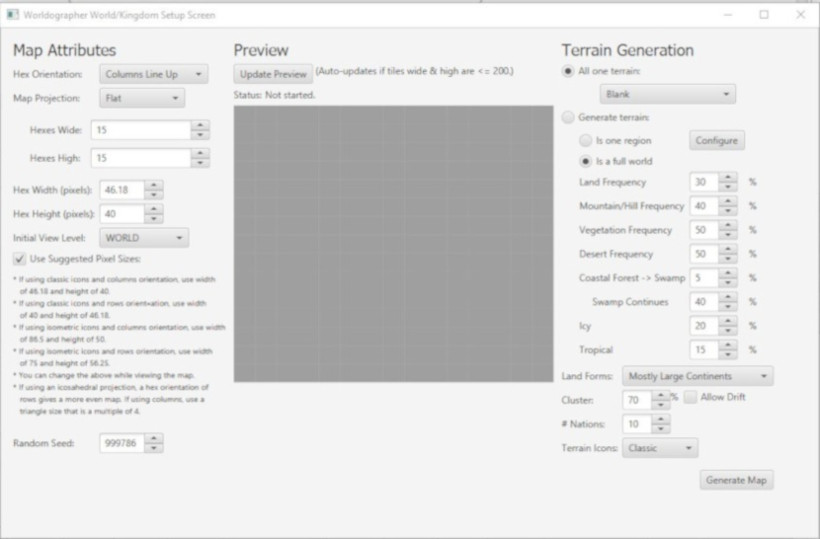

Old School Gamer Blog
Ramblings from old-school gamers
OSR Hex Generation
25 Jul 2025 - John Stoops
I’m planning on starting an Old School Essentials game and needed to create a hex map for it. While looking up techniques to do this I came across this video series by Games from the Front that inspired me to use this approach and wanted to share it with my fellow TTRPG enthusiasts: Old School Essentials.
This approach can be used for any OSR (Old School Renaissance or Old School Revival) game like the original AD&D, Dungeon Crawl Classics (DCC), Shadowdark, Deathbringer, Grave, Iron Halberd, Knave, Basic Fantasy, and many others based on the original DnD rules.
The main inspiration for this “world building” process comes from The Gygax 75 Challenge that suggests the following steps:
- The Concept: Pitch -> Sources of Inspiration
- Surrounding Area
- The Dungeon
- Town Features
- The Larger World
Week 1: The Concept: Pitch and Sources of Inspiration
So to get started, you need to articulate the big ideas and gather sources.
“Step 1 is something you do in your head. Now, fantasy/swords & sorcery games need not have any fixed basis for the assumptions made by its referee (my own doesn’t) except those which embrace the whole of fantasy. This sort of campaign can mix any and all of the various bases which will be mentioned below - and then some. […] Settings based upon limits (if one can speak of fantasy limits) can be very interesting in themselves providing the scope of the setting will allow the players relative free-reign to their imaginations.” – E.G.G.
Pitch
In the Gygax 75 Challenge is suggested that you write down 3-7 well-crafted bullet points that will both communicate and “sell” the world to your players.
For example:
- The Forsaken Frontier is on the edge of civilization where settlers seek their fortune and cling to the protection of local nobles and warlords.
- The Wilds. Not far beyond though, the Frontier is wild where millennia of forgotten civilizations lie in ruins crawling with monsters, evil sorcerers, distant kingdoms of ancient races, and in the unexplored depths an otherworldly evil.
- Player characters are human. Creatures that are either more or less than human come from interactions between gods and mortals or from a more ancient time. These creatures are feared and mistrusted, even if some have become human (e.g. the centaurs).
- Magic is unknown, dangerous, and inhuman. Even the best wizards occasionally fail to properly harness a spell, with unpredictable results. Low-level wizards are powerful. High-level wizards fear for their souls. Continual use of magic results in…changes. Exposure to demons, radiation from other planes, elemental energies in toxic quantities, and the servants of Chaos all affect a wizard over the course of his career. Magic is unpredictable and spells can fail, or may misfire, and the magic user may suffer corruption.
Sources of Inspiration
- The Keep on the Borderlands and the Amber Castle, book series like The Legend of Drizzt by R.A. Salvatore and The Black Company by Glen Cook, and the classic AD&D 1e Dungeon Masters Guide.
Tools
So, how do you go about creating your own hex map from scratch using the random tables in the AD&D 1e Dungeon Masters Guide (DMG) and other resources?
I’m using the tool Worldgrapher because the pro version allows multiple map levels so you can start with a high-level world map and zoom into continent, kingdom, and province detail maps which works well with the DMG and can be fully configured and customized to your preferred number of hexes within the previous levels hex. I’ve also used the free version, Hexographer, for years to create hex maps and will work fine for this you just have to create a separate map for each level so the steps will be slightly different.
Filling in the Blanks and D30 Sandbox Companion have useful rules for generating specific aspects of your world too that are useful.
Week 2: The Surrounding Area
Once you’ve got your pitch you’ll need to start creating your hex map, one settlement of significant size where your players start out (e.g. The Village of Hommlet), at least 2 other settlements, other major terrain feature, a mysterious site to explore (e.g. The Moathouse), a dungeon entrance, and a random encounter table for the area.
”[…] sitting down with a large piece of hex ruled paper and drawing a large scale map. A map with a scale of 1 hex = 1 mile will be about right for player operations such as exploring, camping, adventuring, and eventually building their strongholds. Even such small things as a witch’s hut and side entrances to the dungeon can be shown on the map. The central features of the map must be the major town and the dungeon entrance.” – E.G.G.
Set up Worldographer
Here’s the steps to setup Worldgrapher for a 15x15 hex map at the WORLD level:
- Open Worldographer
- Select File->New World/Kingdom Map
-
Settings:
- Hexes Wide: 15
- Hexes High: 15
- Initial View Level: WORLD
- Select All one terrain and set to: Blank

- Click Generate Map
- Add label at World Level with the text “30mi/hex” by selecting Label->New Text Label and clicking on the the map to place it. Make sure only World is checked else it’ll appear on every level, not just the World level.


-
Show hex numbers & reduce size:
- Check Numbers in bottom toolbar
- Click the cog icon to the right of Numbers to Configure Tile Numbers
- Make a lighter Color (e.g. #4d4d4d)
- Set Size to 12
- Set Pre-Pad to 10s digit

Select Center Atlas-level Hex Terrain
Note: Atlas-level = WORLD level in Worldographer
Here’s the steps to set the starting location on the World map (known as Atlas-level map in AD&D) for your One large settlement (define large however you like):
- Select Terrain->Farmland (aka plains in DMG) & click on starting hex, e.g. 08.05, where the campaign will begin
- Select Feature->Building Clanmoot icon (if you right-click on the icon or terrain you can add it to your favorites so easy to find again)
- Enter label, e.g. Village of Hommlet
-
Settings:
- Check Override color and set to appropriate color e.g. Black
- Check Override Default Scale and set to appropriate scale, e.g. 75
- Check Scale height independently and set to appropriate scale, e.g. 75
- Set Label Style to City or Village
- Make sure World, Continent, Kingdom and Province is checked so feature icon and label appears on every level of the map
- Click in starting hex to place feature icon & label for starting settlement, e.g. 08.05

Generate Surroundings Atlas-level Hex Terrain
Use APPENDIX B: RANDOM WILDERNESS TERRAIN table on page 174 of the DMG to generate terrain surrounding starting tile.
Steps:
- Roll a d20 6 times, noting down the result for each roll. These are the 6 terrain types surrounding your starting hex.
- Define the terrain type for each roll using the table below by matching the result under your starting tile’s terrain column, i.e. Plain, with the terrain type, e.g. if you rolled a 12 it is Scrub
- Apply the generated terrains to surrounding hexes in Worldographer of starting hex, e.g. 08.06, starting at hex above, e.g. 08.04, and continuing clockwise for all 6 surrounding cells
| Plains | Scrub | Forest | Rough | Desert | Hills | Mountains | Marsh | |
|---|---|---|---|---|---|---|---|---|
| Plains | 1-11 | 1-3 | 1 | 1-2 | 1-3 | 1 | 1 | 1-2 |
| Scrub | 12 | 4-11 | 2-4 | 3-4 | 4-5 | 2-3 | 2 | 3-4 |
| Forest* | 13 | 12-13 | 12-14 | 5 | N/A | 4-5 | 3 | 5-6 |
| Rough | 14 | 14 | 15 | 6-8 | 6-8 | 6-7 | 4-5 | 7 |
| Desert | 15 | 15 | N/A | 9-10 | 9-14 | 8 | 6 | N/A |
| Hills** | 16 | 16 | 16 | 11-15 | 15 | 9-14 | 7-10 | 8 |
| Mountains*** | 17 | 17 | 17 | 16-17 | 16-17 | 15-16 | 11-18 | N/A |
| Marsh | 18 | 18 | 18 | 18 | 18 | 17 | N/A | 9-15 |
| Pond | 19 | 19 | 19 | 19 | 19 | 18-19 | 19 | 16-19 |
| Depression | 20 | 20 | 20 | 20 | 20 | 20 | 20 | 20 |
* 1 in 10 also includes hills
aka Hill Forest Decid., Hill Forest Evrgr. in Worldographer.
** 1 in 10 also includes forest
aka Hill Forest Decid., Hill Forest Evrgr. in Worldographer.
*** 1 in 20 have a pass which leads through the range
aka Shapes->Preset: Trail->Curve, reduce Width, e.g. 5 click
points through mountain to represent pass.
Terrain Guide:
- Plain: tundra, steppe, savanna, prairie, heath, moor, downs, meadow e.g. Farmland in Worldographer
- Scrub: brush, veldt, bush, thickets, brackens e.g. Grassland in Worldographer
- Forest: woods, jungle, groves and copses (light forest) e.g. Forest Decid., Forest Evrgr., etc. in Worldographer
- Rough: badlands e.g. Other Badland in Worldographer
- Desert: barrens, waste, flat, snowfield e.g. Desert Sandy in Worldographer
- Hills: ridges, bluffs, dunes e.g. Hills in Worldographer
- Mountains: mesas, glacier, tors e.g. Mtn in Worldographer
- Marsh: fen, slough, swamp, bog, mire, quagmire, morass e.g. Marsh in Worldographer
- Pond: pools, tarn, lake e.g. Cosmic Planet High Water Medium Temperature with Override Default Scale and Scale height independently set appropriately for size and shape of pond/lake in Worldographer
- Depression: gorge, rift, valley, canyon e.g. Symbol Crater with Color override, Override Default Scale, Scale height independently and Rotate (clockwise) set appropriately for size, color and direction of gorge in Worldographer
Source: DMG p173 APPENDIX B: RANDOM WILDERNESS TERRAIN table
Can continue to build out map at this level, if desired.
Select Sub-level Hex Terrain
Note: Sub-level = CONTINENT level in Worldographer.
Starting hex = Center hex of large hex, e.g. 40.24, and should have village/town icon and label from Atlas-level
Steps:
- In Worldographer, change Level to CONTINENT
- Select 5 for Number of Tiles then click OK, OK

- Remove overspill hexes by selecting the Blank terrain then clicking on unwanted hex or holding down left mouse button and moving over them (overspill is any not part of the 6 large hexes surrounding starting large hex)
- Add label at Continent Level with the text “6mi/hex”